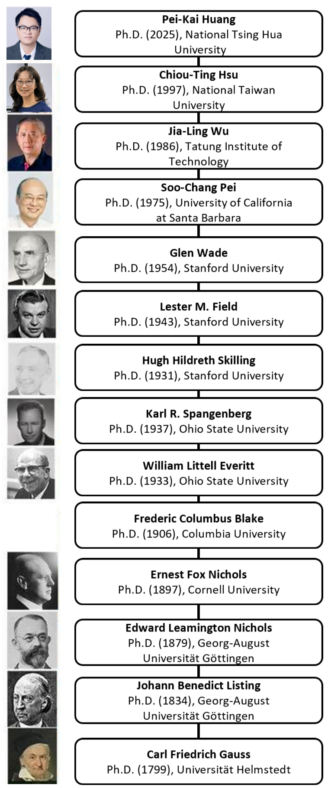

Pei-Kai Huang (黄培凯)
Fujian Normal University (福建师范大学)
College of Computer and Cyber Security (计算机与网络空间安全学院)
硕士生导师
福建省高层次人才 (引进人才,境外C类)
Email: alwayswithme@fjnu.edu.cn

About me
I am currently an Associate Professor at the College of Computer and Cyber Security, Fujian Normal University, China.
I've received the Ph.D. degree from National Tsing Hua University in 2025, the master degree from National Central University in 2019, and the bachelor degree from Fujian Normal University in 2017. I live in Xiamen and Fuzhou, China.
My research area focuses on face anti-spoofing and rPPG Estimation. As the first author/the corresponding author, I have been published in prestigious conferences in the field of computer vision, including CVPR, AAAI, ECCV, BMVC, ICME, ICIP, and ACPR, as well as in renowned journals, including TIFS, Pattern Recognition, Information Science, and ATSIP.
I have reviewed papers from different CV/AI conferences, e.g., CVPR, ECCV, AAAI, ACM MM, and biomedical related journals, e.g., IJCV, TIFS, PR, TDSC, TIM.
Publishing papers is not easy. For the manuscripts I review, I strive to recommend acceptance with revisions whenever the quality of the work permits.
[2026/09] One paper was accepted by IEEE Transactions on Information Forensics & Security (TIFS) (一区Top, CCF A, as the co-author)
[2026/08] One paper was accepted by BMVC 2026 (CCF C, as the co-author)
[2026/08] One paper was accepted by Expert Systems with Applications (ESWA) (一区Top, as the first author)
[2026/07] One paper was accepted by Pattern Recognition (PR) (一区Top, as the first author)
[2026/06] One paper was accepted by ECCV 2026 (CCF B, Tsinghua A, as the corresponding author)
[2026/05] Two papers were accepted by ICPR 2026 (CCF C, as the corresponding author)
[2026/04] One project was recommended for funding by the Natural Science Foundation of Fujian Province, China (as PI).
[2026/02] One paper was accepted by Scientific Data (二区, as the second author)
[2026/02] One paper was accepted by Pattern Recognition (PR) (一区Top, as the first author)
[2026/01] One paper was accepted by Expert Systems with Applications (ESWA) (一区Top, as the sole corresponding author)
[2025/07] One paper was accepted by Pattern Recognition (PR) (一区Top, as the first author)
[2025/04] One paper was accepted by IEEE Transactions on Information Forensics & Security (TIFS) (一区Top, CCF A, as the first author)
[2025/01] One paper was accepted by Information Sciences (CCF B, as the first author)
[2024/12] Offered a faculty position at Fujian Normal University
[2024/12] One paper was accepted by APSIPA Transactions on Signal and Information Processing 2024 (三区, as the first author)
[2024/12] One paper was accepted by AAAI 2025 (CCF A, as the first author)
[2024/02] One paper was accepted by CVPR 2024 (CCF A, as the first author)
[2023/08] One paper was accepted by BMVC 2023 (CCF C, as the first author)
[2023/07] Two papers were accepted by ICIP 2023 (CCF C, as the first author)
[2023/03] One paper was accepted by ICME 2023 (CCF B, as the first author)
[2022/10] One paper was accepted by BMVC 2022 (CCF C, as the first author)
[2022/03] One paper was accepted by ICME 2022 (CCF B, as the first author)
[2021/07] One paper was accepted by ACPR 2021 (EI, as the first author)
Preprint
Yan-Qin Ni, Pei-Kai Huang, Yi-Wei Lee, Chia-Yu Lin, Chin-Chun Chang, Wei-Jen Wang, Deron Liang
Knowledge-Based Systems (Major revision), [一区Top, CCF C, Tsinghua (清华) B, SCIE:Q1]
Paper | Code
Pei-Kai Huang, Jun-Xiong Chong, Ming-Tsung Hsu, Fang-Yu Hsu, Yi-Ting Lin, Kai-Heng Chien, Hao-Chiang Shao, Chiou-Ting Hsu
Pattern Recognition (Major revision), [一区Top, CCF B, Tsinghua (清华) B, SCIE:Q1]
Paper | Code
Yan-Qin Ni, Pei-Kai Huang, Tz-Gang Wang, Wei-Jen Wang, Deron Liang, Chia-Yu Lin
Scientific Data (Nature family journal, Major revision), [二区Top, SCIE:Q1]
Paper | Code
Journal
Renyuan Hu, Zheyu Chen, Pei-Kai Huang, Zhiqiang Yao, Biao Jin, Jianting Ning
IEEE Transactions on Information Forensics & Security (TIFS), 2026, [一区Top, CCF A, Tsinghua (清华) A, SCIE:Q1]
Paper
Pei-Kai Huang, Ya-Ting Chan, Kuan-Wen Chen, Yen-Chun Chou, Shih-Yu Yang, Jhih-Wei Jhao, Wen-Pin Chen, Jun-Ren Chen, Chiou-Ting Hsu
Expert Systems with Applications, 2026, [一区Top, CCF C, Tsinghua (清华) B, SCIE:Q1]
Paper | Code
Pei-Kai Huang, Ya-Ting Chan, Kuan-Wen Chen, Chiou-Ting Hsu, Xiaoding Wang, Md. Jalil Piran
Pattern Recognition, 2026, [一区Top, CCF B, Tsinghua (清华) B, SCIE:Q1]
Paper | Code
Pei-Kai Huang, Jun-Xiong Chong, Ming-Tsung Hsu, Fang-Yu Hsu, Chiou-Ting Hsu
Pattern Recognition, 2026, [一区Top, CCF B, Tsinghua (清华) B, SCIE:Q1]
Paper | Code
In each round, after we completed the revisions, some of the original reviewers were unfortunately unavailable to continue the review process, resulting in new reviewers being assigned and leading to repeated evaluation cycles.
We are especially grateful to the Associate Editor assigned after the reject-and-resubmit decision for the constructive guidance and continuous support throughout the review process.
Jun-Xiong Chong, Fang-Yu Hsu, Ming-Tsung Hsu, Yi-Ting Lin, Kai-Heng Chien, Chiou-Ting Hsu, Pei-Kai Huang * (* corresponding author)
Expert Systems with Applications, 2026, [一区Top, CCF C, Tsinghua (清华) B, SCIE:Q1]
Paper | Code
Yan-Qin Ni, Pei-Kai Huang, Wei-Jen Wang, Deron Liang, and Chia-Yu Lin
Scientific Data (Nature family journal), 2026, [二区, SCIE:Q1]
Paper
Pei-Kai Huang, Tzu-Hsien Chen, Ya-Ting Chan, Kuan-Wen Chen, Shih-Yu Yang, Yen-Chun Chou, Chiou-Ting Hsu
Pattern Recognition, 2026, [一区Top, CCF B, Tsinghua (清华) B, SCIE:Q1]
Paper | Code
Pei-Kai Huang, Tzu-Hsien Chen, Ya-Ting Chan, Kuan-Wen Chen, Chiou-Ting Hsu
IEEE Transactions on Information Forensics & Security (TIFS), 2025, [一区Top, CCF A, Tsinghua (清华) A, SCIE:Q1]
Paper | Code
Pei-Kai Huang, Jun-Xiong Chong, Ming-Tsung Hsu, Fang-Yu Hsu, Chiou-Ting Hsu
Information Sciences, 2025, [二区, CCF B, Tsinghua (清华) B, SCIE:Q1]
Paper | Code
Pei-Kai Huang, Jun-Xiong Chong, Ming-Tsung Hsu, Fang-Yu Hsu, Cheng-Hsuan Chiang, Tzu-Hsien Chen, Chiou-Ting Hsu
APSIPA Transactions on Signal and Information Processing, 2024, [三区, ESCI:Q1]
Paper
Conference
Shih-Yu Yang, Yen-Chun Chou, Pei-Kai Huang*, and Chiou-Ting Hsu* (* corresponding author)
The 19th European Conference on Computer Vision (ECCV 2026), 2026, Malmö, Sweden, [CCF B, Tsinghua (清华) A]
Paper
Jhih-Wei Jhao, Wen-Pin Chen, Jun-Ren Chen, Yen-Chun Chou, Shih-Yu Yang, Pei-Kai Huang*, and Chiou-Ting Hsu* (* corresponding author)
The 28th International Conference on Pattern Recognition (ICPR 2026), 2026, Lyon, France, [CCF C, Tsinghua (清华) B]
Paper
Jun-Ren Chen, Cheng-Hsiang Su, Yi-Chen Ou, Yi-Ting Lin, Kai-Heng Chien, Pei-Kai Huang*, and Chiou-Ting Hsu* (* corresponding author)
The 28th International Conference on Pattern Recognition (ICPR 2026), 2026, Lyon, France, [CCF C, Tsinghua (清华) B]
Paper | Dataset & Code
Pei-Kai Huang, Jun-Xiong Chong, Cheng-Hsuan Chiang, Tzu-Hsien Chen, Tyng-Luh Liu, Chiou-Ting Hsu
The 39th Annual AAAI Conference on Artificial Intelligence (AAAI), 2025, Philadelphia, Pennsylvania, USA, [CCF A, Tsinghua (清华) A]
Paper | Code | Poster
Pei-Kai Huang, Cheng-Hsuan Chiang, Tzu-Hsien Chen, Jun-Xiong Chong, Tyng-Luh Liu, Chiou-Ting Hsu
The IEEE/CVF Conference on Computer Vision and Pattern Recognition (CVPR), 2024, Seattle WA, USA, [CCF A, Tsinghua (清华) A]
Paper | Code | Video | Poster
Pei-Kai Huang, Chen-Yu Lu, Shu-Jung Chang, Jun-Xiong Chong, Chiou-Ting Hsu
British Machine Vision Conference (BMVC), 2023, Aberdeen, UK, [CCF C, Tsinghua (清华) B]
Paper | Code | Video | Poster
Pei-Kai Huang, Cheng-Hsuan Chiang, Jun-Xiong Chong, Tzu-Hsien Chen, Hui-Yu Ni, Chiou-Ting Hsu
IEEE International Conference on Image Processing (ICIP), 2023, Kuala Lumpur, Malaysia, [CCF C, Tsinghua (清华) B]
Paper | Code | Video | Poster
Shu-Jung Chang*, Chen-Yu Lu*, Pei-Kai Huang*, Chiou-Ting Hsu (* equal contribution)
IEEE International Conference on Image Processing (ICIP), 2023, Kuala Lumpur, Malaysia, [CCF C, Tsinghua (清华) B]
Paper | Video | Oral
Pei-Kai Huang, Jun-Xiong Chong, Hui-Yu Ni, Tzu-Hsien Chen, Chiou-Ting Hsu
IEEE International Conference on Multimedia & Expo (ICME), 2023, Brisbane, Australia, [CCF B]
Paper | Code | Video | Poster
Pei-Kai Huang, Hui-Yu Ni, Yan-Qin Ni, Chiou-Ting Hsu
British Machine Vision Conference (BMVC), 2022, London, UK, [CCF C, Tsinghua (清华) B]
Paper | Code | Video | Poster
福建省自然科学基金创青项目： 复杂场景下活体生理信号驱动的人脸反欺骗研究 （负责人）， 2026.05-2029.04, Grant: 2026J008139, 8 万人民币
福建省教育厅重点项目： 恶劣天气下面向自动驾驶的自适应语义分割方法研究 （排序第三）， 2026.04-2028.12, Grant: JZ250007, 10 万人民币
福建师范大学计算机与网络空间安全学院启动经费 （负责人）， 2025.08-2033.08, 10 万人民币
Program Committee: Program Co-Chair & Workshop Organizer, BD-SMDT 2026, IEEE BigData 2026
CCF YOCSEF Fuzhou Academic Committee (AC) Member: 2026-2029
CCF Fuzhou Chapter Committee Member: 2026-2029
The youth editorial board member: Artificial Intelligence and Autonomous Systems (AIAS), 2025.09-2027.09
Conference paper reviewer: CVPR26, AAAI26, ICCV25, CVPR25, BMVC25, ICME25, AAAI25, CVPR24, BMVC24, ICCV23, BMVC23, ICIP23, ICME23, ECCV22, CVPR22, BMVC22, ICME22
Journal paper reviewer: Scientific Data (Nature family journal) x2, IEEE Transactions on Information Forensics & Security (TIFS) x4, International Journal of Computer Vision (IJCV) x1, IEEE Transactions on Dependable and Secure Computing (TDSC) x1, IEEE Transactions on Instrumentation and Measurement (TIM) x2, IEEE Transactions on Biomedical Engineering (TBME) x1, IEEE Transactions on Circuits and Systems for Video Technology (TCSVT) x2, Pattern Recognition (PR) x4, Neural Networks x1, Journal of Selected Topics in Applied Earth Observations and Remote Sensing (JSTARS) x1, Image and Vision Computing x1
《人工智能与大数据》（2.5学分，本科专业选修课），课程负责人。
Artificial Intelligence and Big Data (2.5 credits, undergraduate elective course), Course Coordinator
福建省高层次人才（引进人才，境外C类）
2026年福建省人工智能赋能教育教学改革项目 （校级，“人工智能+”专业类课程）， 人工智能与大数据（排序第二），2026.06.
福建省网络空间安全学会2025年学术年会优秀论文 一等奖（排序第一），2025.11.
IPPR 第十八屆碩博士論文佳作獎 (PS: 畢業近三年内的台灣博士畢業生，前Top 8). 2025.08.
斐陶斐荣誉会员 - 台灣清華大學 (PS: 当年度台灣清華大學博士毕业生，Top 10%). 2025.08.
我的学术谱系可追溯至卡尔·弗里德里希·高斯 （Carl Friedrich Gauss），他是我的第十三代学术祖先。
My academic genealogy can be traced back to Carl Friedrich Gauss, my 13th-generation academic ancestor.
